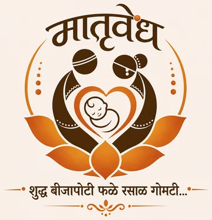

Each card is a complete multi-page site: home, the journey with a page for every program, five practices, services, about and booking on WhatsApp. Open one, use its menu, try it on a phone. Every Marathi line is a draft for the founders: the review sheet lists all of them with their intended meaning. Notes in READ-ME-FIRST.md.